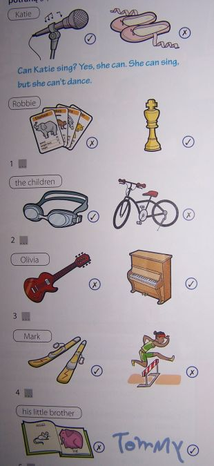

Klasa 5-6B
wychowawca Magdalena GorczycaGeografia Kl.5
Temat: Krajobraz śródziemnomorski, tajga i tundra.
Zapisz notatkę:
- Klimat:
W klimacie śródziemnomorskim wyróżniamy dwie pory roku. Lato jest słoneczne, suche i ciepłe. Zima jest łagodna, temperatura powietrza nie spada poniżej 0°C, ale często pada deszcz.
- Roślinność.
Roślinność w basenie Morza Śródziemnego ma zwykle grube, skórzaste liście pokryte ochronną warstwą w celu zapobiegania nadmiernemu parowaniu. W klimacie śródziemnomorskim uprawia się wiele roślin powszechnie używanych w kuchni – przypraw oraz owoców. Wiele roślin uprawnych zostało sprowadzonych do Polski z krajów śródziemnomorskich.
- Zwierzęta.
Przeczytaj tekst i wpisz zwierzęta występujące w strefie śródziemnomorskiej:
Wśród gadów liczne są żółwie i węże, a także kameleony, gekony i inne jaszczurki. Wiele ptaków naszego regionu (zwłaszcza pływających i owadożernych) spędza zimę nad Morzem Śródziemnym, gdyż w naszych warunkach nie znajdują wówczas odpowiedniego pokarmu. Z Polski nad Morze Śródziemne odlatują na przykład szpaki, skowronki, czajki, perkozy i czaple. Spośród ssaków lądowych charakterystyczne dla regionu są przede wszystkim dziki, jeże, króliki i lisy, a na większych wysokościach – susły, kozice, muflony i koziorożce.
- Turystyka
Teraz już trochę wakacyjnie. Przeniesiemy się w rejon Morza Śródziemnego.
https://www.youtube.com/watch?v=8TdnK6RvnNY
- Krajobraz tajgi i tundry.
- Obejrzyj film a następnie uzupełnij zdania i przepisz je do zeszytu:
https://www.youtube.com/watch?v=xHpr-UAz7jk
Tajga to inaczej lasy……………………………………..Jest to ciepłe i krótkie……………….. oraz mroźna ………………………… Na 1/5 powierzchni tajgi rośnie…………………………………..
W strefie tej żyją m.in. takie zwierzęta jak:
b.Obejrzyj 2 film o tundrze i uzupełnij zdania:
https://www.youtube.com/watch?v=-h73PuVraHs
W tundrze nie ma …………………………… rosną tu głównie:……………………………………………………………….Lato jest bardzo ……………………………, a zimy długie. Zwierzęta mieszkające w tej strefie to:
Geografia Kl.6
Temat: Podsumowanie wiadomości z klasy 6.
Układ Słoneczny.
Układ Słoneczny tworzą Słońce i krążące wokół niego ciała niebieskie. Słońce jest gwiazdą. Wokół Słońca krąży 8 planet:
https://www.youtube.com/watch?v=KZzdwT4mZJk
Wypisz wszystkie planety.
PLASTYKA - KLASA 6
TEMAT : Projekt graficzny napisu – liternictwo
Na poprzedniej lekcji zapoznaliście się z jedną z najstarszych sztuk plastycznych
jaką jest grafika i jej tradycyjnym warsztatem . Współczesna grafika to
cyfrowe nowe technologie, wiele różnych programów graficznych.
Graficy komputerowi projektują plakaty, ulotki reklamowe, okładki płyt i książek,
Ilustracje czy wzory opakowań na różne produkty. Istotnym elementem w tej
twórczości jest stosowanie liternictwa. Zaprojektowanie napisów , kształtu liter
i ich wielkości jest ważnym etapem powstawania wielu prac.
Waszym zadaniem będzie zaprojektowanie graficzne liter.
Napiszcie wasze imię ozdobnymi literami w wybranej kolorystyce na kartce
z bloku rysunkowego.
Pomogą wam filmy. Obejrzyjcie je:
https://www.youtube.com/watch?v=9UgyiiqpFv8
https://www.youtube.com/watch?v=EcugvwsOHW4
https://www.youtube.com/watch?v=jr-zAzxfTVU
Zróbcie zdjęcie pracy i wyślijcie na adres beata.chmiel20@wp.pl do oceny
j.polski kl.5
Zapisz w zeszycie:
Temat: Bracia.
Przeczytaj tekst opowiadania:
Dwaj bracia wspólnie uprawiali niewielkie pole i dzielili się zbiorami. Pewnego wieczora, gdy każdy z nich zwiózł już do stodoły swoją część plonów, jeden z braci przebudził się i tak powiedział do siebie:
– Mój brat jest żonaty i ma dwoje dzieci. A to sprawia, że ma troski i wydatki, które mnie zostały oszczędzone. On z pewnością bardziej potrzebuje tego ziarna niż ja. Zaniosę mu więc po kryjomu kilka worków. Wiem przecież dobrze, że gdybym mu to zaproponował – odmówiłby.
Wstał z łóżka, zaniósł kilka worków z ziarnem do stodoły swego brata i wrócił, by znów się położyć. Tymczasem drugi z braci obudził się chwilę później i tak rzekł do siebie:
– Nie jest sprawiedliwe, żebym miał połowę zbiorów z naszego pola. Mój brat nie zna radości życia rodzinnego. Potrzebuje spotkań z innymi ludźmi i rozrywek, a to przecież kosztuje. Pójdę więc zanieść mu część mojego ziarna.
I wstał, żeby przenieść kilka worków do sąsiedniej stodoły.
Następnego ranka każdy z braci był nadzwyczaj zdumiony, że w jego sąsieku jest tyle samo worków zboża, co poprzedniego dnia.
Każdego roku, gdy przychodził czas zbiorów, robili tak samo. I nigdy nie zdołali zrozumieć, jaki to czar sprawia, że liczba ich worków jest niezmiennie ta sama.
Na kolejnej lekcji ciąg dalszy ))
j.polski kl.6
Zapisz w zeszycie:
Temat: Dwie łąki – słuchowisko.
Skopiuj link :
https://www.youtube.com/watch?v=387BigEykzE
Zamknij oczy i posłuchaj. Przyglądaj się szczegółom, bohaterom, otoczeniu i kolorom.
Na kolejnej lekcji ciąg dalszy lekcji ))
Religia kl 5-6
Temat : Boże Ciało – cud obecności Jezusa.
- Pomódl się słowami pieśni
https://www.youtube.com/watch?v=k-fj5U_0-x8
- Zobacz film Ziarno Boże Ciało
https://vod.tvp.pl/video/ziarno,boze-cialo,25147405
- Zapamiętaj
- kiedy i gdzie została odprawiona pierwsza Msza święta,
- dlaczego obchodzimy uroczystość Bożego Ciała w czwartek, a nie w niedzielę,
- gdzie w Polsce można oglądać cud Eucharystii.
- Pomódl się własnymi słowami, dziękując Panu Jezusowi za każdą przyjętą Komunię świętą.
MATEMATYKA kl . 5-6
Temat: Mnożenie ułamków dziesiętnych przez 10,100,1000
Zapraszam Cię do obejrzenia filmu:
https://www.youtube.com/watch?v=7_gFDt9VOeg
W e-podręczniku zapoznaj się i przepisz zadanie o jabłkach strona 152 oraz notatkę strona 153
„Mnożąc ułamek dziesiętny przez 10….” oraz przykład.
https://flipbook.apps.gwo.pl/display/2152
Kl.V-VI b Muzyka (4.06)
Temat: U naszych najbliższych sąsiadów.
1.Rosja- Teatr Bolszoj w Moskwie.
Jeden z najbardziej znanych baletów na świecie to Dziadek do orzechów Piotra Czajkowskiego.
(przypomnienie: balet-widowisko teatralne, w którym głównym środkiem wyrazu są sugestywny ruch i taniec.)
*Trepak z baletu Dziadek do orzechów (Trepak to jeden z tańców bohaterów słynnego baletu P. Czajkowskiego )
https://www.youtube.com/watch?v=4hYggMTfI2c
2.Ukraina -taniec narodowy Kozak (ukraiński taniec ludowy mężczyzn, wykonujących w czasie jego trwania przysiady, podskoki i wyrzuty nóg do przodu)
*Poznaj tradycję i piękno Ukrainy oraz prawdziwą kozacką dumę. Kalejdoskop ludowych pieśni z różnych regionów, wspaniałe choreografie tańców. Kunszt muzyczny, wokalny, taneczny wielobarwne i oryginalne ukraińskie stroje ludowe oraz tradycyjne instrumenty:cymbały, skrzypce i bandura.
https://www.youtube.com/watch?v=F1sUbiayBt0
3.Czechy- Bedrich Smetana-ojciec czeskiej muzyki narodowej.
B.Smetana - Kompozytor ten tworzył opery i poematy symfoniczne, które doskonale wyrażają czeskiego ducha narodowego i stanowią wzorzec dla przyszłych pokoleń twórców .
(więcej o kompozytorze: kliknij w link)
http://www.muzykotekaszkolna.pl/wiedza/kompozytorzy/smetana-bedrich-1824-1884/
*B.Smetana, Wełtawa z poematu symfonicznego Moja Ojczyzna
https://www.youtube.com/watch?v=fuidg24jLio
j.polski kl.5
Zapisz w zeszycie:
Temat: Nie trzeba w lesie kląć.
Przeczytaj ( nie przepisuj!) uważnie wiersz :
Małgorzata Strzałkowska ,,Moi Mili „
Życie pędzi wciąż do przodu,
coraz prędzej gna i bryka
i czasami w tym pośpiechu
coś ważnego nam umyka.
A więc wniosek dzisiaj stawiam,
aby każdy z nas spróbował
przy okazji, bez okazji,
mówić częściej takie słowa:
Do widzenia, i dzień dobry
co tam słychać?, jak się czujesz?
i poproszę, i przepraszam
oraz proszę i dziękuję,
Wtedy ludziom na tym świecie
sympatyczniej ciut by było.
No, a przecież o to chodzi,
by się wszystkim milej żyło!
Zapisz do zeszytu odpowiedzi :
- Ile zwrotek ma wiersz?
- Kto jest jego autorem?
- Czy wiersz zawiera rymy? Jeśli tak , wypisz je.
Czekam na Wasze prace ))
j.polski kl.6
Zapisz w zeszycie:
Temat: Prawdziwa miłość.
Skopiuj link: https://www.youtube.com/watch?v=H5vgdr_Vt4E
i śledząc poniższy tekst posłuchaj uważnie:
Gdybym mówił językami ludzi i aniołów,
a miłości bym nie miał,
stałbym się jak miedź brzęcząca
albo cymbał brzmiący.
Gdybym też miał dar prorokowania
i znał wszystkie tajemnice,
i posiadał wszelką wiedzę,
i wszelką [możliwą] wiarę, tak iżbym góry przenosił,
a miłości bym nie miał,
byłbym niczym.
I gdybym rozdał na jałmużnę całą majętność moją,
a ciało wystawił na spalenie,
lecz miłości bym nie miał,
nic bym nie zyskał.
Miłość cierpliwa jest,
łaskawa jest.
Miłość nie zazdrości,
nie szuka poklasku,
nie unosi się pychą;
nie dopuszcza się bezwstydu,
nie szuka swego,
nie unosi się gniewem,
nie pamięta złego;
nie cieszy się z niesprawiedliwości,
lecz współweseli się z prawdą.
Wszystko znosi,
wszystkiemu wierzy,
we wszystkim pokłada nadzieję,
wszystko przetrzyma.
(Święty Paweł ,,Hymn o miłości”, 1 List do Koryntian)
Odpowiedz pisemnie na pytanie do zeszytu : Jaka jest prawdziwa miłość, o której pisze Święty Paweł?
Religia kl. V,VI
Temat: Przypowieść – Natrętny przyjaciel.
- Pomódl się słowami pieśni.
https://www.youtube.com/watch?v=bgQmgiQGDsU
- Zobacz i posłuchaj uważnie film opowiadający przypowieść „Natrętny przyjaciel”
https://www.youtube.com/watch?v=Lp5oymw9rYA
- Pomyśl, w czym możesz być wytrwały, co pomoże ci bardziej wierzyć i kochać Jezusa?
- Pomódl się śpiewając pieśń „Małe TGD Siedem”
https://www.youtube.com/watch?v=rqnxLJxz6M8
Technika kl 5
Lekcja
Temat: Zabawka zręcznościowa z recyklingu.
Potrzebne będą:
butelka po kefirze lub pudełko po mleku, pojemniczki po kinder niespodziance lub kulki ze starego dezodorantu w kulce (fawkulce:), sznurek, nożyczki, gwoździk, czarny i czerwony marker, czerwona taśma (opcjonalnie)
Zapoznaj się ze stroną:
https://dzieciakiwdomu.pl/2016/03/zlap-kurczaka-zabawka-zrecznosciowa-dla-dzieci-diy.html
Spróbuj wykonać zabawkę tak jak to zostało przedstawione na stronie internetowej.
Nie spiesz się. Poproś o pomoc osobę dorosłą przy przecinaniu butelki.
Pamiętaj o zachowaniu bezpieczeństwa podczas posługiwania się nożyczkami.
Jeśli możecie zróbcie zdjęcia Waszych prac. Chętnie je zobaczę.
Życzę miłej zabawy
Technika klasa 6b
Temat: Nowoczesny świat techniki. Alternatywne źródła energii.
Mówiliśmy ostatnio o prądzie, o tym jak i gdzie powstaje, jak płynie siecią energetyczną. Ponaliście również zasady bezpieczeństwa w domu i w pobliżu urządzeń energetycznych.
Otoczeni jesteśmy wieloma nowoczesnymi urządzeniami technicznymi. W domach mamy lodówki, pralki, kuchenki, telewizory, radia, komputery, odkurzacze, roboty kuchenne i wiele innych elektrosprzętów. Wszystkie te urządzenia zasilane są prądem elektrycznym. W Polsce prąd produkuje się głównie w elektrowniach spalających węgiel. Są jednak inne sposoby wytwarzania energii elektrycznej. Mówimy, że są to alternatywne źródła energii.
Obejrzyjcie film
https://www.youtube.com/watch?v=CoiGR53oYwg
Zadanie 1.
Przepisz temat lekcji
Zadanie 2.
Wpisz do zeszytu 4 źródła energii alternatywnej.
Technika kl. 5
Temat: Pojemnik na przybory szkolne
Dzisiaj rozpoczniemy nową pracę techniczną. Wykonamy pojemnik na przybory szkolne z plastikowych pojemników.
Poniżej umieściłam 2 filmy. Możesz zobaczyć ciekawe pomysły jak z butelek można zrobić nowy inny praktyczny pojemnik
https://www.youtube.com/watch?v=z1VYNeWX1aw
https://www.youtube.com/watch?v=jQiYe4L17VA
i link ze zdjęciami
Po obejrzeniu filmu i zdjęć zastanów się jaki pojemnik chciałbyś zrobić dla siebie.
Zadanie:
Narysuj w zeszycie kolorowy projekt pojemnika na przybory szkolne.
Napisz jakie przybory i narzędzia będziesz potrzebował do jego wykonania
Przygotuj dostępne w domu materiały i narzędzia do wykonania pojemnika
- Zrób pojemnik według własnego pomysłu
Pamiętaj o zasadach bhp. Bądź ostrożny podczas posługiwania się ostrymi narzędziami.
Zrób zdjęcie zadania i prześlij na mój adres e - mail
Technika kl 6
Dzisiaj powtórzymy wiadomości. Przepisz temat lekcji i podpunkty.
Temat: Wiem co jem - powtórzenie wiadomości
- Etapy obróbki wstępnej żywności
- Zasady BHP i higieny stosujemy podczas przygotowania posiłku
- Prawidłowa organizacja stanowiska pracy
- Przygotowanie posiłku z zastosowaniem produktów z różnych grup żywnościowych
Obejrzyj filmy poniżej. Będziesz mógł powtórzyć wiadomości na temat produktów z różnych grup żywnościowych.
https://www.youtube.com/watch?v=ltr6xhuHvO4
Jak zadbać o higienę w kuchni dowiesz się z filmu poniżej
https://www.youtube.com/watch?v=ipRoso2sdJc
Zadanie: Napisz etapy obróbki wstępnej produktów podczas przygotowania sałatki owocowej oraz jakie zasady bhp stosujemy podczas przygotowania posiłku.
Wf chł
Taniec - Polonez. Podstawowy krok.
Do ucznia: Zachowaj szczególne zasady BHP podczas zajęć!!!
Miejsce, boisko, podwórko, pokój .
- Oglądnij film https://youtu.be/DEX3fnvtv24
- Przeprowadź standartową rozgrzewkę.
- Przećwicz podstawowy krok (raz, dwa, trzy) z wyraźnym akcentem na 3!!!
- Powodzenia
Klasa 5 J.angielski
Topic: What can we do? – Co my potrafimy robić?
Zadanie 1 Umieść odpowiednie zdanie pod obrazkami i przetłumacz go na język polski.
1 We can cook.
2 We can paint.
3 We can dance.
4 We can sing.
OBRAZKI W ZAŁĄCZNIKU

Zadanie 2 Odpowiedz na pytania.
1) What can your mother do? Co potrafi twoja mama robić?
My mother can ...................……………………………………………………
2) What can your father do? My father ……………………………………
3) What can your sister do? My sister ..……………………………………
4) What can your brother do? … ……………………………………………..
5) What can you do? I …………………………………………………………..
Klasa 6 j.angielski
Topic: What can we do? – Co my potrafimy robić?
Zadanie 1 Popatrz na obrazki. Ułóż zdania o tym, co potrafią (v)
i czego nie potrafią (x) robić te osoby. Napisz trzy przykłady.
Słowniczek:
but – ale
play cards [plej kardz] – grać w karty
play chess [plej czes] – grać w szachy
do athletics [du esletiks]- uprawiać lekkoatletykę
Obrazki w załączniku
Przykład:
Can Katie sing? Yes, she can. She can sing, but she can’t dance.
Czy Katie potrafi śpiewać? Tak, ona potrafi. Ona potrafi śpiewać, ale ona nie potrafi tańczyć.
OBRAZKI W ZAŁĄCZNIKU

Zadanie 2 Odpowiedz na pytania.
- What can your mother do? Co potrafi twoja mama robić?
She can ...................………………………………………………………..
- What can your father do? ………………………………………………..
- What can your sister do? …………………………………………………
- What can your brother do? ……………………………………………..
Gw
Z wizytą w Centrum Nauki Kopernik w Warszawie
Dziś zapraszam Was na wycieczkę po wspaniałym miejscu, w którym jest mnóstwo ciekawych rzeczy i co najlepsze wszystko można zobaczyć dotknąć, a nawet poeksperymentować. Centrum Nauki Kopernik znajduje się w Warszawie, jeżeli będziecie kiedyś na wycieczce to koniecznie musicie odwiedzić to miejsce.
http://www.kopernik.org.pl/kopernikwdomu/kopernik-wirtualnie/
HISTORIA 5
TEMAT: Polska w unii z Węgrami i Litwą
Obejrzyj film: https://www.youtube.com/watch?v=Jv_q36m-dg0
NOTATKA:
Kazimierz Wielki był ostatnim królem Polski z rodu Piastów – nie miał syna, który mógłby po nim objąć tron. Dlatego po śmierci Kazimierza w 1370 r. królem Polski został król Węgier z dynastii andegaweńskiej, Ludwik, w Polsce nazywany Ludwikiem Węgierskim. W ten sposób Polskę i Węgry połączyła unia personalna (osobne państwa połączone poprzez panowanie jednego władcy). Ludwik poświęcał Polsce mniej uwagi niż Węgrom, rzadko przyjeżdżał do Krakowa. Ludwik również nie miał syna, więc czynił starania, aby na tronie mogła zasiąść jego córka. Uzyskał na to zgodę w zmian za wydany w 1374 r. w Koszycach przywilej dla stanu szlacheckiego. Po śmierci Ludwika i dwóch latach negocjacji z dworem węgierskim, córka Ludwika Jadwiga w 1384 r. została koronowana na króla (a nie królową) Polski.
Historia kl 6
TEMAT: Powstanie kościuszkowskie i upadek Rzeczypospolitej cz.2
Obejrzyj film: https://www.youtube.com/watch?v=I5gz48F6e-Q
NOTATKA:
24 października 1795 roku dokonano III rozbioru Polski, który na 123 lata przekreślił istnienie niepodległego państwa polskiego. Ostatnią próbą obrony suwerenności była insurekcja kościuszkowska (marzec-listopad 1794 roku), która po pierwszych sukcesach została zdławiona przez Rosjan.
Pomysł ostatecznej likwidacji polskiej państwowości przedstawiła Austria, a 24 października 1795 r. został sfinalizowany. Austria zajęła Lubelszczyznę, Małopolskę z Krakowem, część Mazowsza i Podlasia. Rosjanom przypadły ziemie na wschód od Bugu i Niemna, Prusom zaś Warszawa z Mazowszem, część Podlasia, Litwy i Śląsk.
Wedle tajnego aneksu umowy rozbiorowej ze stycznia 1797 r. trzy zaborcze mocarstwa miały wymazać pojęcie Królestwa Polskiego z historii i map na zawsze.
Matematyka kl. 5-6
Temat: Ćwiczenia w dodawaniu i odejmowaniu ułamków dziesiętnych
Zapraszam Cię do rozwiązania zadań :
https://www.matzoo.pl/klasa5/odejmowanie-ulamkow-dziesietnych_32_183
Język angielski
Topic: Can you do it? - Czy ty potrafisz to robić?
Zadanie 1 Przepisz do zeszytu formy pytające z czasownikiem ‘can’.
Can – pytania
|
|
Can I...? - Czy ja potrafię ...?
Can you...? - Czy ty potrafisz..?
Can he ....? - Czy on potrafi ...?
Can she ... ? - Czy ona potrafi …?
Przykład:
Can you swim? Czy ty potrafisz pływać? - Yes, I can. Tak, potrafię.
- No, I can’t. Nie, ja nie potrafię.
Zadanie 2 Odpowiedz na pytania. Tak, czy nie? Czasowniki znajdziesz na liście z poprzednich lekcji.
Przykład:
Can you write? Yes, I can. Czy ty potrafisz pisać? Tak, ja potrafię.
1 Can you play the piano? ..................................
2 Can you swim? ...........................................
3 Can you read? …………………………..
4 Can you ski? ………………………………..
5 Can you ride a bike? ………………………
6 Can you dance? ……………………………
7 Can you draw? …………………………….
Zadanie 4 Teraz kliknij na link ponizej i posłuchaj nagrania.
https://www.youtube.com/watch?v=_Ir0Mc6Qilo
Słowniczek: clap [klep] klaskać
Stamp – tupać
Klasa 6 wychowawca Magdalena Gorczyca
Topic: Can you do it? - Czy ty potrafisz to robić?
Zadanie 1 Przepisz do zeszytu formy pytające z czasownikiem ‘can’.
Can – pytania
|
|
Can I...? - Czy ja potrafię ...?
Can you...? - Czy ty potrafisz..?
Can he ....? - Czy on potrafi ...?
Can she ... ? - Czy ona potrafi …?
Can it...? - Czy ono potrafi ... ?
Can we ... ? - Czy my potrafimy ...?
Can you ...? - Czy wy potraficie ... ?
Can they ... ? - Czy oni/one potrafią ...?
Przykład:
Can you swim? Czy ty potrafisz pływać? - Yes, I can. Tak, potrafię.
- No, I can’t. Nie, ja nie potrafię.
Can she write? Czy ona potrafi pisać? - Yes, she can. Tak, ona potrafi.
- No, she can’t. Nie ona nie potrafi.
Zadanie 2 Odpowiedz na pytania. Tak, czy nie? Czasowniki znajdziesz na liście z poprzednich lekcji.
Przykład:
Can you write? Yes, I can.
1 Can you play the piano? ..................................
2 Can you swim? ...........................................
3 Can you read? …………………………..
4 Can you ski? ………………………………..
5 Can you ride a bike? ………………………
6 Can you dance? ……………………………
7 Can you draw? …………………………….
Zadanie 3 Wybierz trzy pytania i odpowiedz na nie jeszcze raz pełnym zdaniem tak, jak w przykladzie i przetłumacz zdania na język polski.
Przykład:
I can write. Ja potrafię pisać.
1 ...........................................
2 ...........................................
3 ............................................
Zadanie 4 Kliknij na link ponizej i posłuchaj nagrania.
https://www.youtube.com/watch?v=jANerjPKC9E
Czy znasz odpowiedź na to pytanie?
Can Alice play the violin? .........................................................
-------------------------------------------------------------------------------------------------
biologia V-VI (wtorek)
Lekcja 2 -06-2020
Temat: Ssaki- kręgowce , które karmią młode mlekiem .
Proszę narysować lub wydrukować królika i opisać jego budowę zewnętrzną wyrazami z nawiasu .
[ ogon , kończyny tylne , kończyny przednie, uszy , oczy, nozdrza, jama gębowa , głowa, szyja, tułów]
Informacje dodatkowe o ssakach można odnaleźć na stronie :
https://epodreczniki.pl/a/ssaki/D1CMJfuas
Podkreśl właściwe zakończenie zdań :
Dorosły królik odżywia się
- mięsem .
- pokarmem roślinnym.
Do oddychania królik pobiera tlen z
- wody.
- powietrza.
Królik jest
- obupłciowy i jajorodny.
- rozdzielnopłciowy i żyworodny .
---------------------------------------------------------------------------------------------
Matematyka kl. 5-6
Temat: Ćwiczenia w dodawaniu i odejmowaniu ułamków dziesiętnych
Zapraszam Cię do rozwiązania zadań :
https://www.matzoo.pl/klasa5/dodawanie-ulamkow-dziesietnych_32_182
jeżeli zakończysz to zrób zdjęcie i wyślij mi na maila mag.matematyka@wp.pl
Zapisz w zeszycie trzy wybrane przykłady tej strony.
----------------------------------------------------------------------------------------
- polski kl.5
Zapisz w zeszycie:
Temat: Co to znaczy kochać?
Przeczytaj uważnie fragment utworu ks. Jana Twardowskiego pt. ,, Co to znaczy kochać?”
Koniec i bomba,
nie kochał – więc trąba.
Tak przeczytała pewna dziewczynka w pamiątkowym albumie.
Co to znaczy kochać?
Pomyślała sobie, że kochać – to tylko dawać.
To znaczy troszczyć się o kogoś, martwić się, czy ukochanego brzuch czasem nie boli, smarować komuś bułki grubo masłem, zasłonić szalikiem klosz od lampy, żeby go światło nie raziło i żeby nie mrugał w chorobie, załatwiać mu tysiące spraw tak szybko, że na jednej nodze, szyć mu rękawiczkę po nocach, żeby mu nie zmarzł mały palec u lewej ręki, bo podobno z niego największy zmarzlak.
Tymczasem kochać – to nie tylko dawać, ale i przyjmować.
Przyjmować skrzywioną minę, kiedy ktoś wstanie lewą nogą z łóżka, deszcz, nawet wtedy, kiedy nie ma parasolki, kiedy stłucze się ulubiony talerz (...)
Odpowiedz pisemnie na pytania do tekstu:
- Czy zgadzasz się ze słowami księdza Jana? (Uzasadnij wypowiedź, tzn. napisz dlaczego tak, lub dlaczego nie)
- Według osoby mówiącej w utworze Jana Twardowskiego „kochać” to znaczy… (dokończ zdanie swoimi słowami).
Powodzenia ))
j.polski kl.6
Zapisz w zeszycie:
Temat: Ważna chwila.
Skopiuj link:
https://polska-org.pl/8069786,foto.html?idEntity=7306701
Przejrzyj uważnie slajdy. Odpowiedz pisemnie do zeszytu na pytania : Jaki to dzwon? Jak on wygląda? Gdzie znajduje się ten dzwon?
Skopiuj drugi link:
https://www.youtube.com/watch?v=b1AmHfmIl-A
Napisz w zeszycie jak najwięcej przymiotników ( na jakie pytanie odpowiada przymiotnik? ) , które określą jego ton, np. ton dzwonu Zygmunta jest ….
Prześlij swoją pracę na zpsnysa@gmail.com
Pozdrawiam ))
---------------------------------------------------------------------------------------------------
Temat:Ćwiczenia równoważne
zostańwdomu#trenuj w domu !!!
Potrzebne przybory :piłeczka lub zwinięte skarpetki
Przypominam o zasadach bhp podczas ćwiczeń w domu,tak jak na lekcjach wf w szkole. Proszę również pamiętać, że ćwiczymy tylko i wyłącznie jak jesteśmy zdrowi.
Pamiętajmy przed rozpoczęciem ćwiczeń ,aby zrobić 10 minutową rozgrzewkę (ćwiczenia pamiętamy z lekcji). Ćwiczymy w domu lub na podwórku,boisku. Proszę spróbować powtórzyć wszystkie ćwiczenia na miarę swoich możliwości.
Pozdrawiam Magdalena Gorczyca.
J.angielski Klasa 5
Przepisz temat do zeszytu.
Topic: I can sing very well – Ja potrafię śpiewać bardzo dobrze
Na dzisiejszej lekcji nauczymy się powiedzieć po angielsku, w jakim stopniu potrafimy coś robić.
Zadanie 1 Przepisz tabelę do zeszytu.
Stopień umiejętności:
|
I can sing very well. - Ja potrafię śpiewać bardzo dobrze. I can sing well. - Ja potrafię śpiewać dobrze. I can’t sing well. - Ja nie potrafię śpiewać dobrze. I can’t sing at all. - Ja nie potrafię śpiewać wcale. |
very [weri] – bardzo
well [łel] – dobrze
at all [et ol] – wcale
Zadanie 2 Przetłumacz zdanie na język polski według przykładu.
Przykład:
We can paint very well. My potrafimy malować bardzo dobrze.
He can play the guitar well. …………………………………….
We can dance very well. …………………………………….
They can swim very well. …………………………………….
She can’t cook well. ………………………………………
He can’t read at all. ……………………………………..
J.angielski Klasa 6
Przepisz temat do zeszytu.
Topic: I can sing very well – Ja potrafię śpiewać bardzo dobrze
Na dzisiejszej lekcji nauczymy się powiedzieć w języku angielskim, w jakim stopniu, jak dobrze potrafimy coś robić.
Zadanie 1 Przepisz tabelę do zeszytu.
Stopień umiejętności:
|
I can sing very well. - Ja potrafię śpiewać bardzo dobrze. I can sing well. - Ja potrafię śpiewać dobrze. I can sing quite well. - Ja potrafię śpiewać dość dobrze. I can’t sing very well. - Ja nie potrafię śpiewać bardzo dobrze. I can’t sing at all. - Ja nie potrafię śpiewać wcale. |
very [weri] – bardzo
well [łel] – dobrze
quite [kłajt] – dość
at all [et ol] – wcale
Zadanie 2 Przetłumacz zdanie na język polski według przykładu.
Przykład:
We can paint very well. My potrafimy malować bardzo dobrze.
He can play the guitar well. …………………………………….
We can dance quite well. …………………………………….
They can swim very well. …………………………………….
She can cook well. ………………………………………
He can’t read at all. ……………………………………..
HISTORIA 5
TEMAT: Polska Kazimierza Wielkiego
Obejrzyj film: https://www.youtube.com/watch?v=kctgLm9Jk8g
Polityka wewnętrzna
- polityka gospodarcza i skarbowa
Wprowadzono jednakowe obciążenia pieniężne i wojskowe dla całej ludności. król przeprowadził reformę monetarną, bijąc srebrny grosz, wzorowany na monecie czeskiej, Kazimierz Wielki nadawał liczne przywileje miastom.
- reforma administracyjna
Rozbudowano centralne urzędy nadworne i koronne, na przykład podskarbiego, marszałka, podkanclerzego. W celu zintegrowania wszystkich ziem utworzono także radę królewską.
- kodyfikacja prawa i sądownictwo
Bardzo ważną sprawą dla zjednoczonego państwa polskiego była unifikacja prawa we wszystkich dzielnicach. Przeobrażeniom uległo również sądownictwo. W 1356 r. powołany został do życia Sąd Najwyższy Prawa Niemieckiego na Zamku Krakowskim.
- Akademia Krakowska
W 1364 r. Kazimierz Wielki ufundował uniwersytet w Krakowie. Składał się on z 11 katedr: 8 prawniczych, 2 medyczne i 1 sztuk wyzwolonych. Głównym zadaniem uczelni było dostarczenie wykwalifikowanych urzędników. Po śmierci Kazimierza uniwersytet krakowski podupadł. Jej rozkwit nastąpił dopiero za czasów Władysława Jagiełły.
- pojęcie Korony Królestwa Polskiego
Około połowy XIV w., w miejsce dawnej nazwy Królestwa Polskiego, rozpowszechnił się termin Korony Królestwa Polskiego. Pojęcie to obejmowało nie tylko ziemie wchodzące wówczas w skład Królestwa, ale również te, które kiedyś do niego należały.
HISTORIA 5
TEMAT: Polska w unii z Węgrami i Litwą
Obejrzyj film: https://www.youtube.com/watch?v=Jv_q36m-dg0
NOTATKA:
Kazimierz Wielki był ostatnim królem Polski z rodu Piastów – nie miał syna, który mógłby po nim objąć tron. Dlatego po śmierci Kazimierza w 1370 r. królem Polski został król Węgier z dynastii andegaweńskiej, Ludwik, w Polsce nazywany Ludwikiem Węgierskim. W ten sposób Polskę i Węgry połączyła unia personalna (osobne państwa połączone poprzez panowanie jednego władcy). Ludwik poświęcał Polsce mniej uwagi niż Węgrom, rzadko przyjeżdżał do Krakowa. Ludwik również nie miał syna, więc czynił starania, aby na tronie mogła zasiąść jego córka. Uzyskał na to zgodę w zmian za wydany w 1374 r. w Koszycach przywilej dla stanu szlacheckiego. Po śmierci Ludwika i dwóch latach negocjacji z dworem węgierskim, córka Ludwika Jadwiga w 1384 r. została koronowana na króla (a nie królową) Polski.
Historia kl 6
TEMAT: Powstanie kościuszkowskie i upadek Rzeczypospolitej cz.1
Obejrzyj film: https://www.youtube.com/watch?v=bbWnUn-1wpw
NOTATKA:
Insurekcja kościuszkowska była powstaniem narodowym przeciw Rosji i Prusom, którego celem było ratowanie niepodległej Polski. Mimo początkowych sukcesów i rozprzestrzenieniu się powstania na większość ziem Rzeczpospolitej, to ostatecznie insurekcja została zdławiona. Wkrótce potem Austria, Prusy i Rosja dokonały III rozbioru Polski. 24 marca 1794 roku, na Rynku Głównym w Krakowie Naczelnik Tadeusz Kościuszko złożył uroczystą przysięgę, ogłaszając tym samym akt powstania narodowego, znanego w historii jako Insurekcja Kościuszkowska. Rozpoczęło się powstanie w 1794 r., które było ostatnią próbą ratowania Rzeczypospolitej. Kluczowymi wydarzeniami powstania były: wygrana bitwa pod Racławicami 4 kwietnia, ogłoszenie 7 maja tzw. Uniwersału Połanieckiego, przegrana bitwa pod Maciejowicami 10 października i rozwiązanie wojsk powstańczych 16 listopada pod Radoszycami.
ZADANIE DOMOWE:
Kim był Tadeusz Kościuszko?
TEMAT: Powstanie kościuszkowskie i upadek Rzeczypospolitej cz.2
Obejrzyj film: https://www.youtube.com/watch?v=I5gz48F6e-Q
NOTATKA:
24 października 1795 roku dokonano III rozbioru Polski, który na 123 lata przekreślił istnienie niepodległego państwa polskiego. Ostatnią próbą obrony suwerenności była insurekcja kościuszkowska (marzec-listopad 1794 roku), która po pierwszych sukcesach została zdławiona przez Rosjan.
Pomysł ostatecznej likwidacji polskiej państwowości przedstawiła Austria, a 24 października 1795 r. został sfinalizowany. Austria zajęła Lubelszczyznę, Małopolskę z Krakowem, część Mazowsza i Podlasia. Rosjanom przypadły ziemie na wschód od Bugu i Niemna, Prusom zaś Warszawa z Mazowszem, część Podlasia, Litwy i Śląsk.
Wedle tajnego aneksu umowy rozbiorowej ze stycznia 1797 r. trzy zaborcze mocarstwa miały wymazać pojęcie Królestwa Polskiego z historii i map na zawsze.
Klasa 5 Informatyka
Temat: Zaznaczanie fragmentu rysunku. Komputerowe rysowanie. Powtórka.
- Obejrzyj film
https://www.youtube.com/watch?v=Lq658eBCbHY
- Wykonaj podobne ćwiczenie w programie graficznym Paint
- Jeżeli nie posiadasz komputera opisz w zeszycie w jaki sposób można przenieść fragment rysunku.
Odpowiedź wyślij na mojego e-maila lub na mój nr telefonu.
Powodzenia!
Klasa 6b Informatyka
Temat: Logomocja. Przykłady animacji.
- Wejdź na stronę e podręcznika https://ebook.migra.pl/dlaucznia.php?book=66
Przeczytaj 4. Przykłady animacji ze str. 91
- Do zeszytu przepisz temat i poniższe zdanie. Uzupełnij o brakujące wyrazy (zaznaczyć, klikając)
Aby wykonać przekształcenie w programie Logomocja, należy.......….............. fragment obrazu i zmieniać go,………………... odpowiednią liczbę razy wewnątrz zaznaczenia.
Zrób zdjęcie notatki w zeszycie i wyślij na nr telefonu, lub na adres e-mail
Matematyka kl. 5-6
Temat: Ćwiczenia w dodawaniu i odejmowaniu ułamków dziesiętnych
Zapraszam Cię do obejrzenia filmiku:
https://www.youtube.com/watch?v=2BtFTM7mCxg
Z e-podręcznika zadanie 4 i 5 strona 151
https://flipbook.apps.gwo.pl/display/2152
j.polski kl.5
Zapisz w zeszycie:
Temat: Czy dobrze jest sobie pomagać ?
(PRZECZYTAJ !)
Z okazji Dnia Dziecka wszystkim moim uczniom przesyłam serdeczne pozdrowienia oraz życzenia WYTRWAŁOŚCI, PRACOWITOŚCI I MĄDREJ DETERMINACJI ( patrz tu, co to determinacja: https://wsjp.pl/index.php?id_hasla=31476
…DO PRACY, gdyż do końca roku już niewiele zostało. Zatem nie ociągamy się, nie odkładamy pracy ,,na potem” tylko cierpliwie i wytrwale pracujemy DO KOŃCA ))))
A to ode mnie krótki film dla Was, moi mili (link): https://www.youtube.com/watch?v=Ula9f0dDjbk
Jak rozumiesz temat dzisiejszej lekcji?
W zeszycie zapisz odpowiedź na pytanie zawarte w temacie lekcji. Czekam na Wasze notatki ))
Pozdrawiam))
j.polski kl.6
Zapisz w zeszycie:
Temat: Serca dzieci wg Jana Pawła II.
Wszystkim moim uczniom z okazji Dnia Dziecka przesyłam serdeczne pozdrowienia oraz życzenia WYTRWAŁOŚCI, PRACOWITOŚCI I MĄDREJ DETERMINACJI DO DALSZEJ PRACY :tu sprawdź co znaczy determinacja : https://wsjp.pl/index.php?id_hasla=31476
Posłuchaj uważnie tekstu wiersza: https://www.youtube.com/watch?v=oxv4bDzRiNU
i przemyśl słowa poety. Czy już wiesz, kto napisał te słowa ? – zapisz odpowiedź do zeszytu ))
Pozdrawiam.
Wf dz
Temat: Skok w dal z miejsca.
zostańwdomu#trenuj w domu !!!
Przypominam o zasadach bhp podczas ćwiczeń w domu,tak jak na lekcjach wf w szkole. Proszę również pamiętać, że ćwiczymy tylko i wyłącznie jak jesteśmy zdrowi.
Pamiętajmy przed rozpoczęciem ćwiczeń ,aby zrobić 10 minutową rozgrzewkę (ćwiczenia pamiętamy z lekcji). Ćwiczymy na boisku lub na trawie,piasku
Dzisiaj nauczymy się techniki skoku w dal z miejsca i z rozbiegu.Proszę obejrzyjcie dokładnie filmik.Poćwiczcie
sobie wieloskoki, a następnie tak jak na filmiku skok w dal.
Zajęcia rewalidacyjne przesłane na klasową skrzynkę mailową.
25-29.05 18-22.05 11-15.05 04-08.05 27-30.04 20-24.04 15-17.04 06-08.04 30.03-03.04 25-27.03